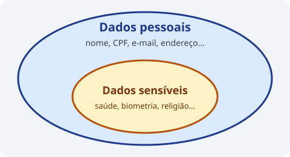

Dado pessoal é qualquer informação relacionada a pessoa natural identificada ou identificável. Dado sensível envolve origem racial, saúde, vida sexual, dados biométricos, entre outros.

Qual das opções é considerada um dado pessoal sensível?
Dados sobre saúde são classificados como dados sensíveis pela LGPD.
O que caracteriza um dado pessoal?
Dado pessoal é qualquer informação relacionada a pessoa natural identificada ou identificável.